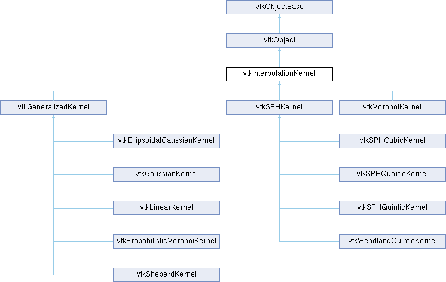

|
Etrek
|
|
Etrek
|
base class for interpolation kernels More...
#include <vtkInterpolationKernel.h>

Public Member Functions | |
| virtual void | Initialize (vtkAbstractPointLocator *loc, vtkDataSet *ds, vtkPointData *pd) |
| virtual vtkIdType | ComputeBasis (double x[3], vtkIdList *pIds, vtkIdType ptId=0)=0 |
| virtual vtkIdType | ComputeWeights (double x[3], vtkIdList *pIds, vtkDoubleArray *weights)=0 |
| vtkAbstractTypeMacro (vtkInterpolationKernel, vtkObject) | |
| void | PrintSelf (ostream &os, vtkIndent indent) override |
| vtkSetMacro (RequiresInitialization, bool) | |
| vtkGetMacro (RequiresInitialization, bool) | |
| vtkBooleanMacro (RequiresInitialization, bool) | |
| Public Member Functions inherited from vtkObject | |
| vtkBaseTypeMacro (vtkObject, vtkObjectBase) | |
| virtual void | DebugOn () |
| virtual void | DebugOff () |
| bool | GetDebug () |
| void | SetDebug (bool debugFlag) |
| virtual void | Modified () |
| virtual vtkMTimeType | GetMTime () |
| void | PrintSelf (ostream &os, vtkIndent indent) override |
| void | RemoveObserver (unsigned long tag) |
| void | RemoveObservers (unsigned long event) |
| void | RemoveObservers (const char *event) |
| void | RemoveAllObservers () |
| vtkTypeBool | HasObserver (unsigned long event) |
| vtkTypeBool | HasObserver (const char *event) |
| vtkTypeBool | InvokeEvent (unsigned long event) |
| vtkTypeBool | InvokeEvent (const char *event) |
| std::string | GetObjectDescription () const override |
| unsigned long | AddObserver (unsigned long event, vtkCommand *, float priority=0.0f) |
| unsigned long | AddObserver (const char *event, vtkCommand *, float priority=0.0f) |
| vtkCommand * | GetCommand (unsigned long tag) |
| void | RemoveObserver (vtkCommand *) |
| void | RemoveObservers (unsigned long event, vtkCommand *) |
| void | RemoveObservers (const char *event, vtkCommand *) |
| vtkTypeBool | HasObserver (unsigned long event, vtkCommand *) |
| vtkTypeBool | HasObserver (const char *event, vtkCommand *) |
| template<class U, class T> | |
| unsigned long | AddObserver (unsigned long event, U observer, void(T::*callback)(), float priority=0.0f) |
| template<class U, class T> | |
| unsigned long | AddObserver (unsigned long event, U observer, void(T::*callback)(vtkObject *, unsigned long, void *), float priority=0.0f) |
| template<class U, class T> | |
| unsigned long | AddObserver (unsigned long event, U observer, bool(T::*callback)(vtkObject *, unsigned long, void *), float priority=0.0f) |
| vtkTypeBool | InvokeEvent (unsigned long event, void *callData) |
| vtkTypeBool | InvokeEvent (const char *event, void *callData) |
| virtual void | SetObjectName (const std::string &objectName) |
| virtual std::string | GetObjectName () const |
| Public Member Functions inherited from vtkObjectBase | |
| const char * | GetClassName () const |
| virtual vtkTypeBool | IsA (const char *name) |
| virtual vtkIdType | GetNumberOfGenerationsFromBase (const char *name) |
| virtual void | Delete () |
| virtual void | FastDelete () |
| void | InitializeObjectBase () |
| void | Print (ostream &os) |
| void | Register (vtkObjectBase *o) |
| virtual void | UnRegister (vtkObjectBase *o) |
| int | GetReferenceCount () |
| void | SetReferenceCount (int) |
| bool | GetIsInMemkind () const |
| virtual void | PrintHeader (ostream &os, vtkIndent indent) |
| virtual void | PrintTrailer (ostream &os, vtkIndent indent) |
| virtual bool | UsesGarbageCollector () const |
Protected Member Functions | |
| virtual void | FreeStructures () |
| Protected Member Functions inherited from vtkObject | |
| void | RegisterInternal (vtkObjectBase *, vtkTypeBool check) override |
| void | UnRegisterInternal (vtkObjectBase *, vtkTypeBool check) override |
| void | InternalGrabFocus (vtkCommand *mouseEvents, vtkCommand *keypressEvents=nullptr) |
| void | InternalReleaseFocus () |
| Protected Member Functions inherited from vtkObjectBase | |
| virtual void | ReportReferences (vtkGarbageCollector *) |
| vtkObjectBase (const vtkObjectBase &) | |
| void | operator= (const vtkObjectBase &) |
Protected Attributes | |
| bool | RequiresInitialization |
| vtkAbstractPointLocator * | Locator |
| vtkDataSet * | DataSet |
| vtkPointData * | PointData |
| Protected Attributes inherited from vtkObject | |
| bool | Debug |
| vtkTimeStamp | MTime |
| vtkSubjectHelper * | SubjectHelper |
| std::string | ObjectName |
| Protected Attributes inherited from vtkObjectBase | |
| std::atomic< int32_t > | ReferenceCount |
| vtkWeakPointerBase ** | WeakPointers |
Additional Inherited Members | |
| Static Public Member Functions inherited from vtkObject | |
| static vtkObject * | New () |
| static void | BreakOnError () |
| static void | SetGlobalWarningDisplay (vtkTypeBool val) |
| static void | GlobalWarningDisplayOn () |
| static void | GlobalWarningDisplayOff () |
| static vtkTypeBool | GetGlobalWarningDisplay () |
| Static Public Member Functions inherited from vtkObjectBase | |
| static vtkTypeBool | IsTypeOf (const char *name) |
| static vtkIdType | GetNumberOfGenerationsFromBaseType (const char *name) |
| static vtkObjectBase * | New () |
| static void | SetMemkindDirectory (const char *directoryname) |
| static bool | GetUsingMemkind () |
| Static Protected Member Functions inherited from vtkObjectBase | |
| static vtkMallocingFunction | GetCurrentMallocFunction () |
| static vtkReallocingFunction | GetCurrentReallocFunction () |
| static vtkFreeingFunction | GetCurrentFreeFunction () |
| static vtkFreeingFunction | GetAlternateFreeFunction () |
base class for interpolation kernels
vtkInterpolationKernel specifies an abstract interface for interpolation kernels. An interpolation kernel is used to produce an interpolated data value at a point X from the points + data in a local neighborhood surrounding X. For example, given the N nearest points surrounding X, the interpolation kernel provides N weights, which when combined with the N data values associated with these nearest points, produces an interpolated data value at point X.
Note that various kernel initialization methods are provided. The basic method requires providing a point locator to accelerate neighborhood queries. Some kernels may refer back to the original dataset, or the point attribute data associated with the dataset. The initialization method enables different styles of initialization and is kernel-dependent.
Typically the kernels are invoked in two parts: first, the basis is computed using the supplied point locator and dataset. This basis is a local footprint of point surrounding a poitnX. In this footprint are the neighboring points used to compute the interpolation weights. Then, the weights are computed from points forming the basis. However, advanced users can develop their own basis, skipping the ComputeBasis() method, and then invoke ComputeWeights() directly.
|
pure virtual |
Given a point x (and optional associated point id), determine the points around x which form an interpolation basis. The user must provide the vtkIdList pIds, which will be dynamically resized as necessary. The method returns the number of points in the basis. Typically this method is called before ComputeWeights(). Note that ptId is optional in most cases, although in some kernels it is used to facilitate basis computation.
Implemented in vtkGeneralizedKernel, vtkSPHKernel, and vtkVoronoiKernel.
|
pure virtual |
Given a point x, and a list of basis points pIds, compute interpolation weights associated with these basis points. Note that both the nearby basis points list pIds and the weights array are provided by the caller of the method, and may be dynamically resized as necessary. The method returns the number of weights (pIds may be resized in some cases). Typically this method is called after ComputeBasis(), although advanced users can invoke ComputeWeights() and provide the interpolation basis points pIds directly.
Implemented in vtkEllipsoidalGaussianKernel, vtkGaussianKernel, vtkGeneralizedKernel, vtkLinearKernel, vtkProbabilisticVoronoiKernel, vtkShepardKernel, vtkSPHKernel, and vtkVoronoiKernel.
|
virtual |
Initialize the kernel. Pass information into the kernel that is necessary to subsequently perform evaluation. The locator refers to the points that are to be interpolated from; these points (ds) and the associated point data (pd) are provided as well. Note that some kernels may require manual setup / initialization, in which case set RequiresInitialization to false, do not call Initialize(), and of course manually initialize the kernel.
Reimplemented in vtkEllipsoidalGaussianKernel, vtkGaussianKernel, vtkSPHCubicKernel, vtkSPHKernel, vtkSPHQuarticKernel, vtkSPHQuinticKernel, and vtkWendlandQuinticKernel.
|
overridevirtual |
Methods invoked by print to print information about the object including superclasses. Typically not called by the user (use Print() instead) but used in the hierarchical print process to combine the output of several classes.
Reimplemented from vtkObjectBase.
Reimplemented in vtkLinearKernel, vtkProbabilisticVoronoiKernel, vtkShepardKernel, vtkSPHCubicKernel, vtkSPHKernel, vtkSPHQuarticKernel, vtkSPHQuinticKernel, vtkVoronoiKernel, and vtkWendlandQuinticKernel.
| vtkInterpolationKernel::vtkAbstractTypeMacro | ( | vtkInterpolationKernel | , |
| vtkObject | ) |
Standard method for type and printing.
| vtkInterpolationKernel::vtkSetMacro | ( | RequiresInitialization | , |
| bool | ) |
Indicate whether the kernel needs initialization. By default this data member is true, and using classes will invoke Initialize() on the kernel. However, if the user takes over initialization manually, then set RequiresInitialization to false (0).